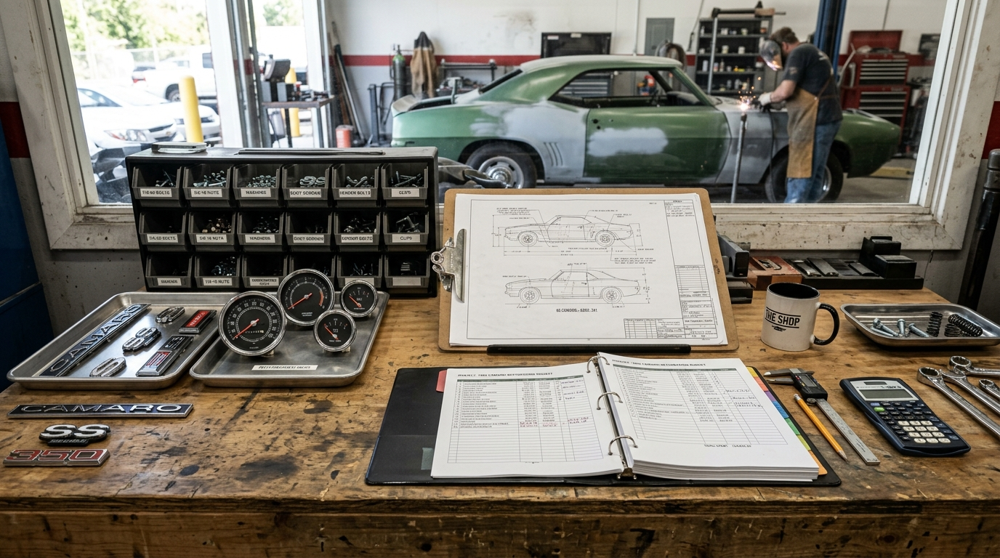
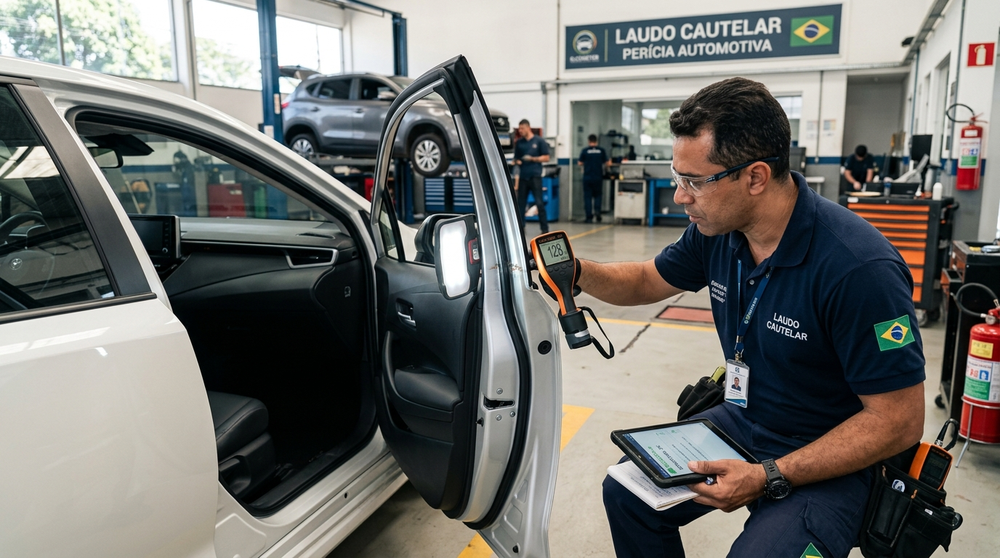

Franquia de Seguro ou Conserto Particular: Quando Vale a Pena Acionar a Apólice?
A franquia de seguro nem sempre é o caminho mais barato: comparar valor da franquia, prazo de vistoria e efeito no bônus da renovação é o que define se o conserto particular sai mais vantajoso em Osasco.

Acionar a franquia de seguro ou pagar o conserto particular é uma decisão de três variáveis: o valor da franquia previsto no contrato, o efeito do sinistro na classe de bônus da renovação e o tempo que o carro fica parado entre vistoria, autorização e chegada de peças. Quando o orçamento do reparo fica próximo ou abaixo da franquia, o particular costuma vencer a conta.
O erro mais comum é abrir o sinistro antes de conhecer o orçamento. Sem o valor do reparo em mãos, o motorista não tem como comparar os dois caminhos e acaba pagando a franquia cheia por um dano que uma funilaria em Osasco resolveria com reparo localizado, sem registro no histórico da apólice.
A avaliação prévia pode ser feita antes da vistoria oficial. O guia de fotos para orçamento pelo WhatsApp mostra quais imagens o técnico precisa para estimar o dano, o que já indica se o caso é de reparo simples, funilaria com repintura ou substituição de peça.
Como a franquia de seguro é calculada
A franquia é a participação obrigatória do segurado no conserto de um sinistro. O cálculo parte do valor de referência do veículo na tabela da seguradora e varia conforme o plano contratado, o perfil do condutor e o histórico de sinistros.
- Franquia normal: percentual maior sobre o valor de referência, com prestação mensal mais baixa.
- Franquia reduzida: percentual menor em troca de prêmio mais alto, indicada para quem roda muito em vias movimentadas.
- Agravamento: contratos podem prever franquia majorada após sinistros anteriores no mesmo período de vigência.
- Isenções parciais: vidros, faróis, retrovisores e pequenos reparos podem ter franquia própria ou isenção, o que muda a decisão.
Existe ainda a participação em peças de reposição, prevista em parte dos contratos. Nesses casos, mesmo com o conserto aprovado, o segurado arca com um percentual do valor das peças novas — um detalhe que só aparece na leitura da apólice e que altera bastante a comparação com o orçamento particular.
Prazos: vistoria do seguro x conserto particular
O tempo parado é o custo invisível do sinistro. No caminho do seguro, cada etapa depende de terceiros; no particular, o calendário é definido entre a oficina e o cliente.
| Etapa | Caminho pelo seguro | Caminho particular |
|---|---|---|
| Avaliação do dano | Vistoria agendada pela seguradora | Presencial ou por fotos, no mesmo dia |
| Aprovação | Depende da análise e da autorização do orçamento | Fechada diretamente com o cliente |
| Peças | Fila de fornecedor credenciado | Compra ou recuperação definida com o cliente |
| Execução | Oficina credenciada ou indicada pela seguradora | Oficina escolhida pelo proprietário |
| Pagamento | Franquia e eventual participação em peças | Valor fechado no orçamento aprovado |
Classe de bônus e o custo na renovação
A classe de bônus é o desconto acumulado por quem não aciona a apólice. Cada sinistro com indenização pode reduzir ou zerar essa classe na renovação seguinte, o que transforma a economia de hoje em custo fixo no próximo contrato.
A conta prática é simples: some o valor da franquia ao provável aumento do prêmio na renovação e compare com o orçamento particular. Em danos pequenos, esse total costuma superar o reparo direto. Em danos grandes, com troca de peças e recuperação estrutural, o seguro volta a ser o caminho mais racional.
Conduta com terceiros: quem aciona qual apólice
Quando há outro veículo envolvido, a lógica muda. Se o terceiro foi o responsável pelo impacto, ele pode acionar a apólice dele e o seu reparo é indenizado sem consumo da sua franquia. Se a culpa é sua, o dano ao outro carro entra na cobertura de responsabilidade civil e o seu próprio conserto segue a regra da franquia.
- Não assuma culpa no local. A definição de responsabilidade é técnica e contratual, não uma questão de gentileza no acostamento.
- Registre a ocorrência com fotos de posição, placas, danos e do local, mesmo em batidas leves de estacionamento.
- Guarde o laudo fotográfico do seu carro antes de qualquer reparo, para eventual ressarcimento ou discussão de responsabilidade.
- Confirme a oficina indicada e o prazo de autorização antes de deixar o veículo, para não perder dias em fila.
Quando o conserto particular é a melhor decisão
O particular ganha vantagem em cenários bem definidos, e reconhecê-los evita abrir um sinistro que não se paga:
- Orçamento do reparo próximo ou abaixo do valor da franquia.
- Dano pontual, sem comprometimento estrutural, resolvido com reparo localizado.
- Necessidade de usar o carro rapidamente, sem esperar vistoria e autorização.
- Histórico de bônus alto, que seria perdido com o registro do sinistro.
- Amassado com tinta íntegra, caso do martelinho de ouro, que preserva a pintura de fábrica e não exige repintura.
Martelinho de ouro como alternativa que dispensa a apólice
Amassados de estacionamento, batidas de porta e granizo leve costumam ter tinta e verniz intactos — situação em que o martelinho de ouro express devolve a forma da chapa sem repintar a peça. Além do custo menor, o serviço preserva a originalidade da lataria, ponto decisivo na avaliação de revenda e no laudo cautelar.

Perguntas Frequentes sobre Franquia de Seguro e Conserto Particular
As dúvidas abaixo são as que mais aparecem no atendimento da oficina quando o assunto é decidir entre acionar a apólice ou pagar o reparo direto.
O que é a franquia do seguro automotivo e como ela é calculada?
A franquia é a parte do conserto que o segurado paga quando abre um sinistro. O valor costuma ser um percentual sobre o valor de referência do veículo na tabela da seguradora, com faixas menores nos planos de prêmio mais alto. Ela é devida mesmo quando o orçamento do reparo é menor que a própria franquia, e alguns contratos preveem isenção para vidros e pequenos reparos.
Quando compensa mais pagar o conserto no particular?
Compensa quando o orçamento do reparo fica próximo ou abaixo do valor da franquia, ou quando o dano é pequeno e pode ser resolvido com martelinho de ouro. Nesse cenário o motorista evita o registro de sinistro, mantém a classe de bônus na renovação e recebe o carro em menos tempo, sem depender de vistoria, autorização e chegada de peças.
Acionar o seguro encarece a renovação da apólice?
Pode encarecer. O histórico de sinistros é um dos fatores que definem a classe de bônus, e o uso da apólice tende a reduzir o desconto na renovação seguinte. O impacto varia conforme o contrato e a seguradora, por isso a comparação entre franquia e orçamento particular deve ser feita antes de abrir o sinistro, com os números na mão.
Continue Lendo Sobre Reparos de Funilaria
Quer Saber se o Reparo Cabe no Particular?
Envie as fotos do dano no WhatsApp da FG Car e receba uma estimativa prévia gratuita. Com o valor em mãos, você compara com a franquia do seu contrato antes de decidir.
⚡ Pedir Orçamento no WhatsAppAv. Visconde de Nova Granada, 3151 — Cipava, Osasco/SP — CEP 06080-125
Seg–Sex 08:00–18:00 · Sáb 08:00–12:00